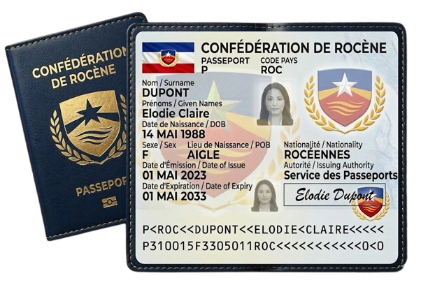
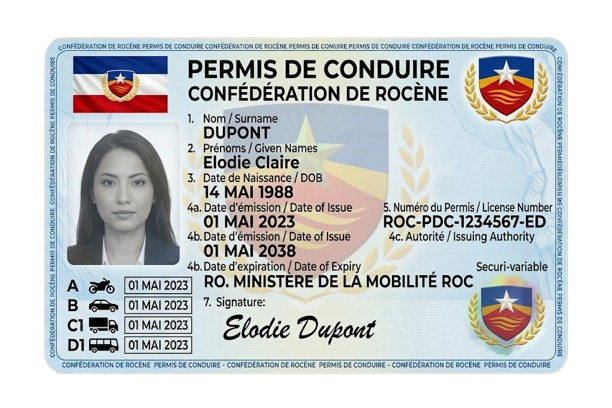

Documents d'identité
Documents officiels délivrés aux citoyens de la Confédération de Rocène
La Confédération de Rocène délivre plusieurs types de documents officiels permettant de prouver l’identité et la citoyenneté des citoyens.
Carte d'identité

La carte d'identité est obligatoire pour tout citoyen de Rocène. Elle permet d’identifier le porteur et de certifier sa nationalité.
Télécharger l'exemplePasseport

Le passeport est nécessaire pour voyager à l’étranger et prouve la citoyenneté rocénienne.
Télécharger l'exemple{kind=link}
Permis de conduire

Le permis de conduire officiel de Rocène est délivré après réussite aux examens pratiques et théoriques.
Télécharger l'exemple{kind=link}
Informations pratiques
- Pour obtenir un document d’identité, le citoyen doit fournir une preuve de citoyenneté et un justificatif de domicile.
- Les documents sont délivrés gratuitement aux citoyens de Rocène.
- En cas de perte ou de vol, le citoyen doit le signaler immédiatement à la Cour Constitutionnelle Citoyenne.
- La validité des cartes d'identité et passeports est de 10 ans.